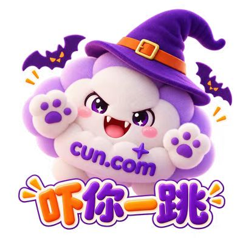

CASE 01 / 04
MY ROLE / 我的职责
把技术能力
翻译成用户价值。
在 CUN.com 负责多模型创作平台的品牌宣传与创作者生态运营。围绕模型协同方案，产出模型对比白皮书、能力测评、技术向种草内容和短视频脚本；搭建可复用的 Prompt 资产与案例库，降低创作者试错成本。
- 内容策略与渠道分发：X、TikTok、小红书等平台
- 创作者侧：模板、案例、正向与负向提示词范式
- 运营闭环：曝光、注册、激活、付费转化与 CAC
小红书近 30 天曝光30万
首页推荐占比74%
X 平台累计浏览79,634
单篇热门帖浏览2万+
01
模型能力转译
把多模型协同、生成效果与使用场景变成创作者能理解的内容表达。
02
Prompt 资产建设
沉淀模板、正负向提示词范式和优质案例，形成可复用素材库。
03
多渠道内容分发
按平台调性制作测评、教程、海报文案及短视频口播稿。
04
数据与产品反馈
结合曝光、转化和用户反馈评估内容效果，推动产品体验迭代。
内容要有记忆点，
也要有转化路径。
以下展示你提供的 CUN.com 活动海报与 IP 形象素材。页面作为项目呈现，不将单张素材的具体设计归属写成个人独立完成。


BEYOND CUN.COM
更多项目经验
OPPO AIGC 智能壁纸方案、海外区域化推荐与 A/B 实验，以及 CUN.ai API 聚合网关运营。